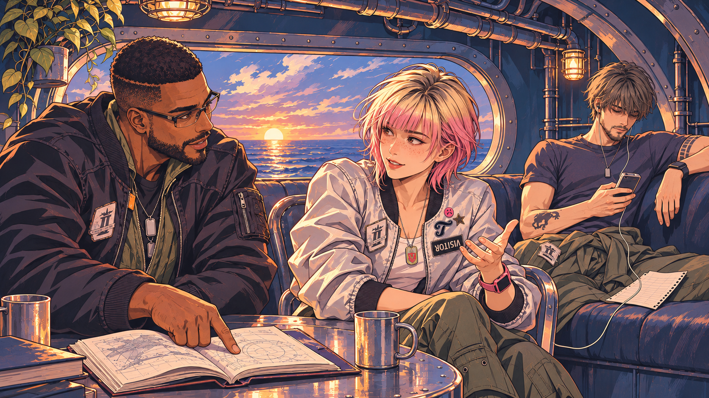

TEWY · 记忆
原曲 00:30.85–00:44.85 · 14 秒01 / 红花与故土
昔日欢悦的原野，如今已然枯槁。目光、白浅盆与红银莲花叠入失去的故土。
L01–02；HRA-003 / 047 的记忆意象。肖像与故土是叠化构图，不是新增真实会面。
三组镜头，试验细线、厚涂、冷暖光色与环绕构图。先看整体感受，再比较舰上场面的二维修订。人物与衣装依据官方资料，画面动作与构图属于同人创作。
顺序：故土记忆 → Joker 同行 → 托付。点击播放会有原曲声音。
昔日欢悦的原野，如今已然枯槁。目光、白浅盆与红银莲花叠入失去的故土。
L01–02；HRA-003 / 047 的记忆意象。肖像与故土是叠化构图，不是新增真实会面。
启程吧，偕亲友同行。书页与音乐把三位同伴放回战争中的日常。
L05–06；HRA-017 / 018 的同人延伸。二维修订作为当前试听图，初稿保留供比较。
手伸向天空，将无法亲自抵达的归处托付出去。白压力袖、红线与金属腕扣沿用实录。
HRA-057；只有 Tewy 自己的右手，没有实体握手。局部音乐对应，不添加未定时的归乡歌词。
左为初稿：更接近电影写实。右为修订：明确描线与概括明暗色块，银色夹克恢复布料感。试听默认采用修订；两版都没有替你作最终选择。
